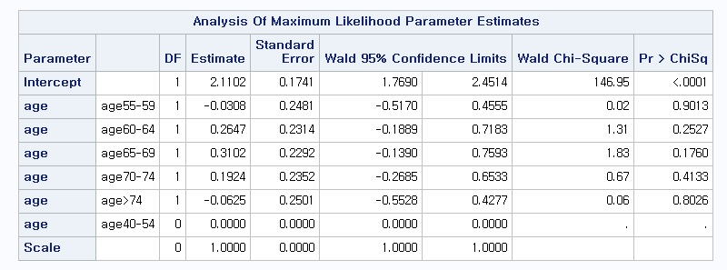
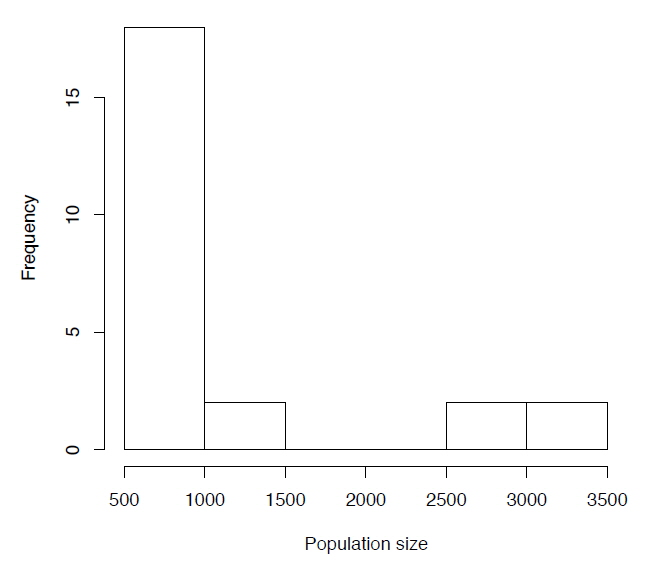
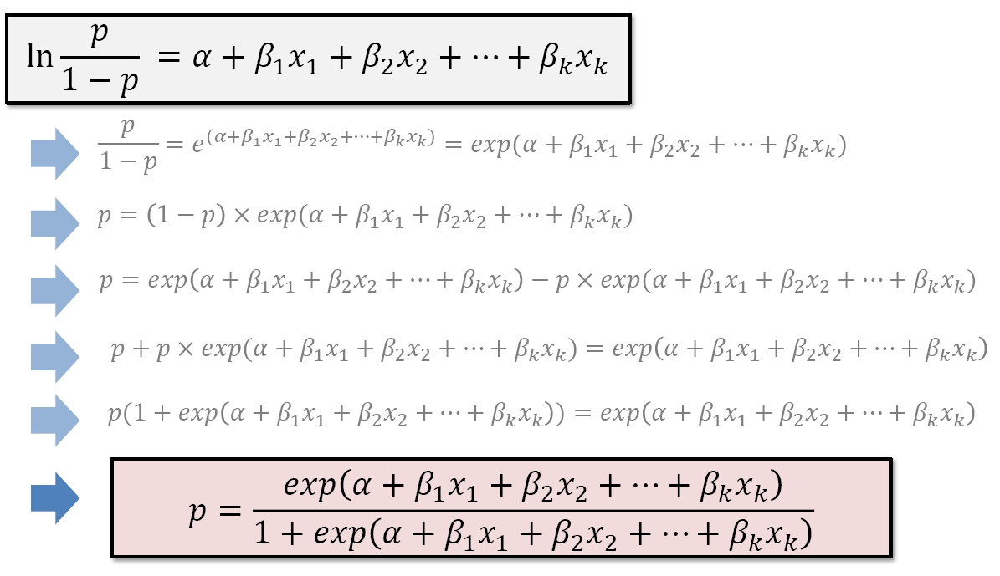
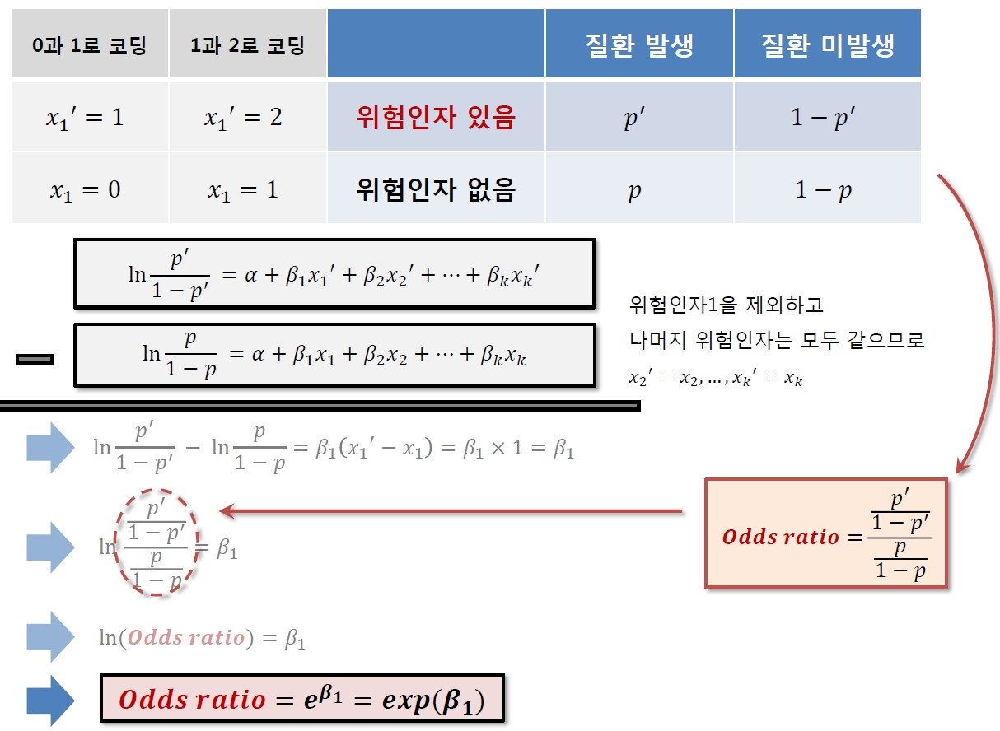
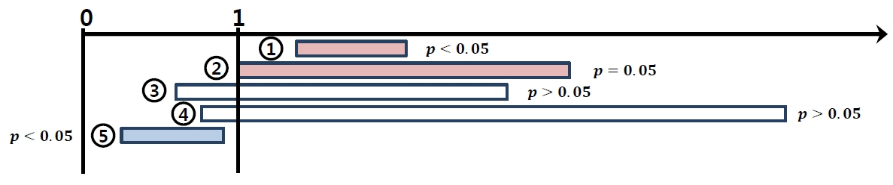
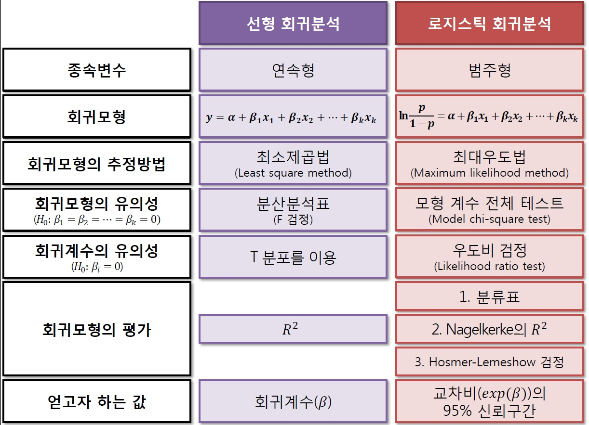
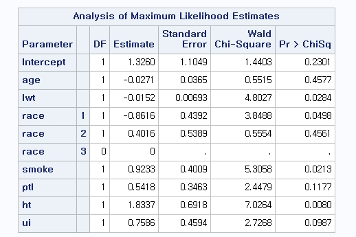
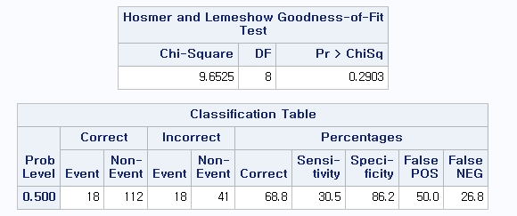

Chapter 6 일반화 선형모형
6.1 The Generalized Linear models
6.1.1 The General Linear Model
The general linear model
\[y_i = \beta_0 + \beta_1 x_{1i} + \ldots + \beta_p x_{pi} + \epsilon_i\]
the response \(y_i\), \(i=1,\ldots ,n\) is modelled by a linear function
of explanatory variables \(x_j\), \(j=1 , \ldots , p\) plus an error
term.
Here general refers to the dependence on potentially more than one explanatory variable, v.s. the simple linear model: \[y_i = \beta_0 + \beta_1 x_i + \epsilon_i\]
The model is linear in the parameters, e.g. \[\begin{aligned} y_i &=& \beta_0 + \beta_1 x_1 + \beta_2 x_1^2 + \epsilon_i \\ y_i&=&\beta_0 + \beta_1 x_1x_2 + \beta_2 exp(x_2) +\epsilon_i \end{aligned}\] but not e.g. \[\begin{aligned} y_i &=& \beta_0 + \beta_1 x_1^{ \beta_2}+ \epsilon_i \\ y_i&=&\beta_0 exp(\beta_1 )x_1 +\epsilon_i \end{aligned}\]
We assume that the errors \(\epsilon_i\) are independent and identically distributed such that \[E[\epsilon_i]=0 \hskip5pt \text{and} \hskip5pt var[\epsilon_i]=\sigma^2\]
Typically we assume \[\epsilon_i \sim N(0 , \sigma^2 )\] as a basis for inference, e.g. t-tests on paramters.
Although a very useful framework, there are some situations where general linear models are not appropriate.
the range of \(Y\) is restricted (e.g. binary, count)
the variance of \(Y\) depends on the mean
Generalized linear models (GLMs) extend the range of application of general linear models by accommodating response variables with non-normal conditional distribution to address both of these issues.
Except for the error, the right-hand side of a generalized linear model is essentially the same as for a general linear model.
6.1.2 Generalized Linear Models (GLMs)
A generalized linear model consists of three components:
Random component : specifying the conditional distribution of the response variable, \(Y_i\), given the explanatory variables.
Traditionally, the random component is a member of an "exponential family" - the normal (Gaussian), binomial, Poisson, gamma, or inverse-Gaussian families of distributions - but generalized linear models have been extended beyond the exponential families.
Systematic component : A linear function of the regressors, called the linear predictor, \[\eta_i = \beta_0 + \beta_1 x_{1i} + \ldots + \beta_p x_{pi}\] on which the expected value \(\mu_i\) of \(Y_i\) depends.
The \(X\)’s may include quantitative predictors, but they may also include transformations of predictors, polynomial terms, contrasts generated from factors, interaction regressors, etc.
Link function : an invertible link function which transforms the expectation of the response to the linear predictor.
A link function that describes how the mean, \(E(Y_i )=\mu_i\), depends on the linear predictor \[g(\mu_i )=\eta_i\]
The inverse of the link function is sometimes called the mean function : \(g^{-1}(\eta_i )=\mu_i\).
A variance function that describes how the variance, \(var(Y_i )\) depends on the mean \(var(Y_i )=\phi V(\mu_i)\) where the dispersion parameter \(\phi\) is a constant.
The generalized linear model
\[g(\mu_i) = \beta_0 + \beta_1 x_{1i} + \ldots + \beta_p x_{pi}\]
where \(g(\cdot)\) is the link function, \(\mu_i\) is the expectation of
random component \(Y_i\) and explanatory variables \(x_j\),
\(j=1 , \ldots , p\) .
6.1.3 Normal GLMs as a Special Case
For the general linear model with \(\epsilon \sim N(0,\sigma^2)\) we have the linear predictor \[\eta_i = \beta_0 + \beta_1 x_{1i} + \ldots + \beta_p x_{pi}\] the link functions \[g(\mu_i ) = \mu_i\] and the variance function \[V(\mu_i )=1\]
The linear regression form \[E(Y_i | X)=\mu_i = \beta_0 + \beta_1 x_{1i} + \ldots + \beta_p x_{pi}\]
6.1.4 Modelling Binomial Data
Suppose \[Y_i \sim Binomial(n_i , p_i)\] and we wish to model the proportions \(Y_i / n_i\). Then \[E(Y_i /n_i)=p_i , \qquad var(Y_i /n_i ) = \frac{1}{n_i } p_i (1-p_i )\] And variance function is \[V(\mu_i )=\mu_i ( 1-\mu_i)\]
Link function must map from \((0,1) \rightarrow (-\infty, \infty)\). A coommon choice is \[g(\mu_i ) = logit(\mu_i )=log(\frac{\mu_i}{1-\mu_i})\]
The linear regression form \[log(\frac{\mu_i}{1-\mu_i})= \beta_0 + \beta_1 x_{1i} + \ldots + \beta_p x_{pi}\]
6.1.5 Modelling Poisson Data
Suppose \[Y_i \sim Poisson(\lambda_i)\] and we wish to model the counts \(Y_i\). Then \[E(Y_i )=\lambda_i , \qquad var(Y_i ) = \lambda_i\] And variance function is \[V(\mu_i )=\mu_i\]
Link function must map from \((0,\infty) \rightarrow (-\infty, \infty)\). A natural choice is \[g(\mu_i ) = log(\mu_i )\]
The linear regression form \[log(\mu_i)= \beta_0 + \beta_1 x_{1i} + \ldots + \beta_p x_{pi}\]
6.1.6 Transformation vs. GLMs
In some situations a response variable can be transformed to improve linearity and homogeneity of variance so that a general linear model can be applied.
This approach has some drawbacks
Response variable has changed!
Transformation must simultaneously improve linearity and homogeneity of variance
Transformation may not be defined on the boundaries of the sample space
For example, a common remedy for the variance increasing with the mean is to apply the log transform. e.g. \[log(y_i)=\beta_0 +\beta_1 x_1 +\epsilon_i\] \[\Rightarrow E(logY_i )=\beta_0 +\beta_1x_1\]
This is alinear model for the mean of \(logY\) which may not always be appropriate.
If \(Y\) is income perhaps, we are really interested in the mean income of population subgroups, in which case it would be better to model \(E(Y)\) using a GLMs: \[logE(Y_i)=\beta_0 +\beta_1x_1\] with \(V(\mu )=\mu\). This also avoids difficulties with \(y=0\).
6.1.7 Exponential Family
Most of the commonly used statistical distributions, e.g. Normal, Binomial and Poisson, are members of the exponential family of distributions whose densities can be written in the form \[f(y; \theta, \phi )=exp \left ( \frac{y\theta-b(\theta)}{\phi}+c(y,\phi) \right)\] where \(\phi\) is the dispersion parameter and \(\theta\) is the canonical parameter.
It can be shown that \[\begin{aligned} E(Y) &=& b'(\theta) = \mu \\ var(Y)&=&\phi b''(\theta)=\phi V(\mu) \end{aligned}\]
6.1.8 Canonical Links
For a GLMs where the response follows an exponential distribution we have \[g(\mu_i )=g(b'(\theta_i ))=\beta_0 +\beta_1 x_{1i} + \ldots + \beta_p x_{pi}\]
The canonical link is defined as \[\begin{aligned} g&=&(b')^{-1} \\ \Rightarrow g(\mu_i )&=&\theta_i = \beta_o + \beta_1 x_{1i}+ \ldots + \beta_p x_{pi} \end{aligned}\]
Canonical links lead to desirable statistical properties of the GLMs hence tend to be used by default.
However there is no a priori reason why the systematic effects in the model should be additive on the scale given by this link.
6.1.9 Estimation of the Model Parameters
A single algorithm can be used to estimate the parameters of an exponential family GLMs using maximum likelihood.
The log-likelihood for the sample \(y_1, \ldots , y_n\) is \[l=\sum_{i=1}^n \frac{y_i\theta_i - b(\theta_i )}{\phi_i}+c(y_i , \phi_i )\]
The maximum likelihood estimates are obtained by solving the score equations \[s(\beta_j )=\frac{\partial l}{\partial\beta_j} =\sum_{i=1}^n \frac{a_i(y_i -\mu_i)}{ V(\mu_i )}\times \frac{x_{ij}}{g'(\mu_i )}=0\] Here \(\phi_i = \phi/a_i\) where \(\phi\) is a single dispersion parameter and \(a_i\) are known prior weights.
By the Fisher’s scoring method, the solution can be written as \[\mathbf{\beta}^{(r+1)} = (\mathbf{X}^T \mathbf{W}^{(r)} \mathbf{X})^{-1} \mathbf{X}^T \mathbf{W}^{(r)} \mathbf{z}^{(r)}\]
i.e. the score equations for a weighted least squares regression of \(\mathbf{z}^{(r)}\) on \(\mathbf{X}\) with weights \(\mathbf{W}^{(r)}=diag(w_i )\), where \[\begin{aligned} z_i^{(r)} &=& \eta_i^{(r)} + (y_i - \mu_i^{(r)} )g' (\mu_i^{(r)}) \\ \text{and} \quad w_i^{(r)}&=&\frac{a_i}{V(\mu_i^{(r)})(g'(\mu_i^{(r)}))^2} \end{aligned}\]
The estimates can be found using an Iteratively (Re-)Weighted Least Squares (IRLS) algorithm
Start with initial estimates \(\mu_i^{(r)}\)
Calculate working responses \(z_i^{(r)}\) and working weights \(w_i^{(r)}\)
Calculate \(\mathbf{\beta}^{(r+1)}\) by weighted least squares
Repeat 2 and 3 till convergence
For models with the canonical link, this is simply the Newton-Raphson method.
6.1.10 Distribution and Link Function

6.2 Poisson Regression
Count data, in which there is no upper limit to the number of counts, usually fall into two types
Rates : counts per unit of time/area/distance, etc
Contingency tables : counts cross-classified by categorical variables
We concentrate on rates data can be modelled using Poisson GLMs with a log link
Log-linear model for mean rate: \[\log(\lambda_i ) = \beta_0 + \beta_1 x_{1i} + \ldots +\beta_p x_{pi}\] where \(p\) is the number of predictors (or covariates) in the model
Random component: \[Y_i|\mathbf{X}_i \sim Poisson(\lambda_i )\]
Here, \(\lambda_i = E(Y_i|\mathbf{X}_i)=var(Y_i|\mathbf{X}_i)\)
Exponentiating gives us a model for the rate parameter, or expected counts: \[\lambda_i = e^{\beta_0 + \beta_1 x_{1i} + \ldots +\beta_p x_{pi}}\]
For Poisson random variables, expectation of \(Y_i\) is \(\lambda_i\), so the log-linear model provides a prediction for the expected value of \(Y_i\)
\(e^{\beta_j}\)=Rate ratio for a \(1\) unit increase in \(x_j\), i.e. rate ratio for \(x_j +1\) compared to \(x_j\), with other covariates held constant.
\(e^{\Delta\beta_j}\)=Rate ratio for a \(\Delta\) unit increase in \(x_j\), i.e. rate ratio for \(x_j +\Delta\) compared to \(x_j\), with other covariates held constant.
\(e^{\beta_0}\)=Baseline rate value, i.e. rate for an observation with all \(X\)’s equal to zero.
The systematic portion of the model allows linear combinations of the covariates: \[\beta_0 + \beta_1 x_{1i} + \ldots +\beta_p x_{pi}\]
Since we have no restrictions on the predictors \(X_1 , \ldots, X_p\), the predicted values can take any values on the real line: \((-\infty, +\infty)\)
But our outcome variable \(Y_i\) consistes of counts, so the expected value of \(Y_i\) has the restriction: \(\lambda_i \in \left[0, +\infty\right)\)
After taking a log transform, we get: \(\log(\lambda_i) \in (-\infty, +\infty)\) which is just what we wanted.
6.2.1 Example: Danish Lung Cancer Counts
Cases of lung cancer were counted in four Danish cities between \(1968\) and \(1971\) inclusive.
We have \(24\) observations on each of \(4\) variables:
Cases: the number of lung cancer cases
Pop: the popilation of each age group in each city
Age: the categorical age group; one of 40-54, 55-59, 60-64, 65-69, 70-74 or $>$74
city: the city; one of Fredericia, Horsens, Kolding, or Vejle
Questions of interest: How does the expected number of lung cancer counts vary by age?
Dataset

Boxplots of observed counts versus age category

Model \[\begin{aligned} &&\log(\lambda_i )\\ &=& \beta_0 +\beta_1 I(Age55-59_i)+\beta_2 I(Age60-64_i) \\ &+&\beta_3 I(Age65-69_i)+\beta_4 I(Age70-74_i)+\beta_5 I(Age>74_i) \end{aligned}\]
We are fitting a model with indicators for each of the age categories.
Baseline is the group aged \(40-54\).
\(I(age55-59)\) is an indicator of having age \(55-59\), it is equal to \(1\) for those of age \(55-59\) and \(0\) otherwise.
\(I(age60-64)\) is an indicator of having age \(60-64\), it is equal to \(1\) for those of age \(60-64\) and \(0\) otherwise.
etc...
SAS Code for Poisson regression
proc genmod data=danish;
class age(ref='age40-54');
model cases=age/ **dist=poisson link=log** type3;
estimate 'age2' age 1 0 0 0 0 -1/exp;
estimate 'age3' age 0 1 0 0 0 -1/exp;
estimate 'age4' age 0 0 1 0 0 -1/exp;
estimate 'age5' age 0 0 0 1 0 -1/exp;
estimate 'age6' age 0 0 0 0 1 -1/exp;
run;Results

\[\begin{aligned} \log(\lambda_i ) &=& 2.110 -0.031 I(Age55-59_i)+0.265 I(Age60-64_i) \\ &+&0.310 I(Age65-69_i)+0.192 I(Age70-74_i)\\ &-&0.063 I(Age>74_i) \end{aligned}\]
We interpret \(\hat{\beta}_0=2.110\) as the log expected count of cancer cases among individuals aged \(40-54\)
We interpret \(\hat{\beta}_0+\hat{\beta}_1=2.079\) as the log expected count of cancer cases among individuals aged \(55-59\)
We interpret \(\hat{\beta}_1=-0.031\) as the difference in log expected count of cancer cases comparing the \(55-59\) age group to the \(40-54\) age group. We can also interpret \(\hat{\beta}_1\) as a log relative rate
\[\begin{aligned} \log(\lambda_i ) &=& 2.110 -0.031 I(Age55-59_i)+0.265 I(Age60-64_i) \\ &+&0.310 I(Age65-69_i)+0.192 I(Age70-74_i)\\ &-&0.063 I(Age>74_i) \end{aligned}\]
We interpret \(exp(\hat{\beta}_0)=8.24\) as the expected count of cancer cases among individuals aged \(40-54\)
We interpret \(exp(\hat{\beta}_0+\hat{\beta}_1)=8.00\) as the expected count of cancer cases among individuals aged \(55-59\)
We interpret \(exp(\hat{\beta}_1)=0.97\) as the ratio of expected counts comparing the \(55-59\) age group to the \(40-54\) age group. We can also interpret \(exp(\hat{\beta}_1)\) as a relative rate
Let’s perform a likelihood ratio test to look at the global hypothesis: \[H_0 : \beta_1 = \beta_2 = \beta_3 = \beta_4 =\beta_5 =0\] versus the alternative hypothesis: \[H_a : \text{at least one of the } \beta_i \text{'s is not } 0, \text{for } i\in 1,\ldots,5\]
Test statistic:
TS = -2(logLik(intercept only model)-logLik(Age model))
= 4.95 \(\sim \chi_5^2\)
Critical value for the hypothesis at level \(\alpha=0.05\): \(\chi_{5,0.05}^2 = 11.07\). Fail to reject the null hypothesis.
Conclusions:
Based on the Poisson model of cancer case counts as a function of Age, we noted a generally increasing number of cases with increasing age.
The trend was not monotonically increasing with age.
Not a statistically significant result.
6.2.2 What About Accounting for Population Size?
So far we modelled the observed counts of cancer cases as Poisson counts.
The population size from each of these counts was drawn is also known.
Can we improve our analysis?
Each city and age group has a different population size.
If we model expected counts without accounting for population size, we may just be picking up effects of population distribution by age.
Accounting for population size can refine our analysis.
The distribution of population sizes appears bimodal.
The population sizes range from a minimum of \(509\) to a miximum of \(3,142\) people.

So far, we have modeled expected counts for each population group, within the \(4\) year period of time: \[Rate=Counts/4years\]
It may be more intersting to know the rate per person, per \(4\) year period of time: \[Rate=\frac{Counts/Population\ size}{4\ years} = \frac{Counts}{4\ person-years}\]
Even better, we can get the rate per person year as: \[Rate=\frac{Counts/4\ Population\ size}{4\ years} = \frac{Counts}{person-years}\]
Here, \(4\cdot Population\ size\) is equal to the number of person-years that we observed to obtain each count.
We can think of the person years at the denominator to be used to caculate the cancer rate per person, per year.
If we prefer the cancer rate per \(100\) person-years, we can just multiply the rate per person-year by \(100\).
Suppose we are told that \(100,000\) new cases of HIV were reported in the world, during the past three years.
What is the incidence rate of HIV?
We can calculate incidence as: \[\begin{aligned} & &\frac{Number\ of\ new\ cases}{Number\ of\ people\ observed \cdot Amount\ of\ time\ observed} \\ &=& \frac{100,000\ cases}{6,000,000,000\ people\ in\ the\ world \cdot 3\ years\ of\ observation}\\ &=& 5.55 \times 10^{-6} \ cases / person - year \\ &=& 5.55\ cases/ 1,000,000\ person - years \end{aligned}\] Based on this incidence rate, we could say that each year, there are about \(5.55\) new cases of HIV per \(1,000,000\) people per year.
So far, we have written a model for the expected number of counts over the \(4\) year period of observation.
However, if we know that the total populations generating our counts differ substantially, it does not make sense to write a log-linear model to consider expected counts direct.
What we really wnat is to consider, the rate per person year \[r_i = \frac{\lambda_i } {Pop_i}=\frac{E(count_i )}{Pop_i}\] and model that by a log-linear model.
Based on this model, we can still say: \[Y_i \sim Poisson(\lambda_i )=Poisson(r_i \cdot Pop_i)\]
On a log scale, our model will be: \[\begin{aligned} \log(r_{i})&=&\log(\frac{\lambda_i}{Pop_i} )=\beta_0 +\beta_1 I(Age55-59_i)+\beta_2 I(Age60-64_i) \\ &+&\beta_3 I(Age65-69_i)+\beta_4 I(Age70-74_i)+\beta_5 I(Age>74_i) \end{aligned}\]
Exponentiating, we get: \[\begin{aligned} \frac{\lambda_i}{Pop_i} &=& exp\{ \beta_0 +\beta_1 I(Age55-59_i)+\beta_2 I(Age60-64_i) \\ &+&\beta_3 I(Age65-69_i)+\beta_4 I(Age70-74_i)+\beta_5 I(Age>74_i) \} \end{aligned}\]
Divide the \(\lambda_i\)s by the population size that yielded each count to get rates "per \(4\) person-years".
Now that we have a model of rates per \(4\) person-years, we can divide by \(4\) to get rate per person-year.
We can then multiply by \(10,000\) to get rates per \(10,000\) person-years (maybe easier to interpret than person-years).
Dividing by 4 and multiplying by \(10,000\) is the same as multiplying by \(2500\):
Exponentiating, we get: \[\begin{aligned} &&\frac{\lambda_i}{Pop_i/2500} = exp\{ \beta_0 +\beta_1 I(Age55-59_i)+\beta_2 I(Age60-64_i) \\ &+&\beta_3 I(Age65-69_i)+\beta_4 I(Age70-74_i)+\beta_5 I(Age>74_i) \} \end{aligned}\]
Finally, we should take a log-transform to get back our log-linear model: \[\begin{aligned} &&\log(\frac{\lambda_i}{Pop_i /2500} ) \\ &=&\beta_0 +\beta_1 I(Age55-59_i)+\beta_2 I(Age60-64_i) \\ &+&\beta_3 I(Age65-69_i)+\beta_4 I(Age70-74_i)+\beta_5 I(Age>74_i) \end{aligned}\]
Further, we can move the population denominator to the other size of the equation: \[\begin{aligned} &&\log(\lambda_i ) \\ &=& \log(Pop_i/2500) + \beta_0 +\beta_1 I(Age55-59_i)+\beta_2 I(Age60-64_i) \\ &+&\beta_3 I(Age65-69_i)+\beta_4 I(Age70-74_i)+\beta_5 I(Age>74_i) \end{aligned}\]
Here, we call the amount \(\log(Pop_i/2500)\) the offset.
using the offset is just a way of accounting for population sizes, which could vary by age, region, etc.
The term "offset" is jargon for predictor terms whose \(\beta\) coefficient is forced to be \(+1\).
Using an offset gives us a convenient way to model rates per person-years, instead of just modeling the raw counts.
If all the observations have the same exposure, the model does not need an offset term and we can model \(\log(\lambda_i)\) directly.
SAS Code for Poisson regression data danish;
set danish;
logpop=log(pop/2500);
run;
proc genmod data=danish;
class age(ref=‘age40-54’);
model cases=age/offset=logpop dist=poisson link=log type3;
estimate ‘age2’ age 1 0 0 0 0 -1/exp;
estimate ‘age3’ age 0 1 0 0 0 -1/exp;
estimate ‘age4’ age 0 0 1 0 0 -1/exp;
estimate ‘age5’ age 0 0 0 1 0 -1/exp;
estimate ‘age6’ age 0 0 0 0 1 -1/exp;
run;
Results

After including the offset in our model, we need to change our regression coefficient interpretations a bit.
We should think of the outcome as \(\log(\lambda_i)-\text{offset}_i\).
In this case, \(\lambda_i\) was the expected number of cases observed in a particular age group and city, within a \(4\) year period of time.
Our offset was \(\log(Pop_i/2500)\).
So, we should think of the outcome as log rate per \(10,000\) person years.
\(\beta_0\) is the log rate of cancer cases per \(10,000\) person years in the baseline age group of \(40-54\).
\(\beta_1\) is the log relative rate of cancer cases per \(10,000\) person years comparing the age group \(55-59\) to the baseline age group \(40-54\).
\(\beta_2\) is the log relative rate of cancer cases per \(10,000\) person years comparing the age group \(60-64\) to the baseline age group \(40-54\).
Before we put the offset in our model, none of our regression coefficients were statistically significant.
\(\Rightarrow\) without the offset, there was no statistically sifnificant difference in the expected counts per year at age group compared to the baseline \(40-54\) group.
After including the offset, we’re looking for differences in the expected counts per person-year, across age groups.
Let’s perform a likelihood ratio test to look at the global hypothesis: \[H_0 : \beta_1 = \beta_2 = \beta_3 = \beta_4 =\beta_5 =0\] versus the alternative hypothesis: \[H_a : \text{at least one of the } \beta_i \text{'s is not } 0, \text{for } i\in 1,\ldots,5\]
Test statistic:
TS = -2(logLik(intercept only, with offset)-logLik(Age model with offset)) = 101.6 \(\sim \chi_5^2\)
Critical value for the hypothesis at level \(\alpha=0.05\): \(\chi_{5,0.05}^2 = 11.07\). reject the null hypothesis.
Model \[\begin{aligned} &&\log(\lambda_i ) \\ &=& \log(Pop_i/2500) + \beta_0 +\beta_1 I(Age55-59_i)+\beta_2 I(Age60-64_i) \\ &+&\beta_3 I(Age65-69_i)+\beta_4 I(Age70-74_i)+\beta_5 I(Age>74_i) \end{aligned}\]
Predicted log rate of cancer per \(10,000\) person years among \(40-54\) year olds; \[\hat{\beta}_0=1.96\]
Predicted rate of cancer per \(10,000\) person years among \(40-54\) year olds; \[exp(\hat{\beta}_0)=exp(1.96)=7.09\]
Based on this model, we predict \(7.09\) new cases of lung cancer per \(10,000\) \(40-54\) year olds in Denmark, per year.
Predicted log rate of cancer per \(10,000\) person years among \(55-59\) year olds; \[\hat{\beta}_0 + \hat{\beta}_1=3.04\]
Predicted rate of cancer per \(10,000\) person years among \(55-59\) year olds; \[exp(\hat{\beta}_0 + \hat{\beta}_1)=exp(1.96+1.08)=20.9\]
Based on this model, we predict \(20.9\) new cases of lung cancer per \(10,000\) \(55-59\) year olds in Denmark, per year.
We predicted an incidence rate of \(7.09\) cases per \(10,000\) per year among \(40-54\) year olds, and a rate of \(20.9\) new cases per \(10,000\) person years for \(55-59\) years olds.
\(\Rightarrow\) The relative rate per \(10,000\) person years comparing \(55-59\) years olds to \(40-54\) years olds is \(20.9/7.09 \approx 2.94\).
We could have gotten the same answer by taking \(exp(\hat{\beta}_1)=exp(1.08)=2.94\).
\(exp(\hat{\beta}_1)\) is the relative rate cancer cases per \(10,000\) person years comparing \(55-59\) years olds to \(40-54\) years olds.
\(\hat{\beta}_1\) is the log relative rate.
There is an increasing trend in relative rates compared to the baseline \(40-54\) year old group as age increases.
The only exception for this trend is for the \(Age>74\) group.
The model fit matches what we know from biology: the risk of cancer does increase with age, but trails of for the oldest individuals perhaps because
Those surviving to age \(74\) and beyond have genes which protect against cancer.
Cell growth slows down at older ages, slowing the growth of tumors.
The purpose of an offset is the change the denominator or units of a rate.
Often, the model without an offset does not make much sense, and likely fails our Poisson assumptions.
We should always try to use an offset if we suspect that the underlying population sizes differ for each of the observed counts.
Typically the offset will take value \(\log(N)\) where \(N\) is the sample size, or the number of person-years.
If the underlying population sizes are not available, we just have to do our best - but be careful about applying the Poisson model.
Log-linear models can be a good way to approach count data.
If population sizes or denominators are available, it’s a good idea to include an offset.
Log-linear models can also be useful in analyzing binary data from cohort studies, but with care.
6.3 Logistic regression
로지스틱 회귀분석은 특정 질병의 유무에 영향을 미치는 요인을 밝히는 통계적 방법
종속변수가 범주형 자료인 경우 연속형 자료를 종속변수로 이용하는 회귀분석은 사용 불가능. 이때 로지스틱 회귀분석을 이용
선형회귀모형 \[y = \beta_0 + \beta_1 x_{1} + \ldots + \beta_p x_{p} + \epsilon\]
로지스틱 회귀모형 \[\log(\frac{p}{1-p})= \beta_0 + \beta_1 x_{1} + \ldots + \beta_p x_{p}\]
여기서 \(p\)는 성공(예: 질환의 발병) 확률을 의미
체중(\(X\))과 고혈압 유무(\(P\)) 관계 그래프

체중이 증가함에 따라 고혈압이 있을 확률이 증가
고혈압 여부는 연속형 변수가 아닌 \(0\)과 \(1\)의 두 가지 값을 갖는 이분형 변수이기 때문에 선형회귀 분석 불가
위험요인(체중)의 각 수준에 따른 질병(고혈압)이 있을 확률 \(p\)를 로짓변환(logit transformation)해 주면 \(logit(p)\)는 \(-\infty \sim \infty\)의 연속형 변수로 변환됨
로짓변환 \[logit(p)=\ln \frac{p}{1-p}\]

로지스틱 회귀분석은 \(logit(p)\)를 종속변수로 두고 회귀분석을 적용한 방법
질병이 있을 확률 \(p\) 추정

확률 곡선

로지스틱 회귀 직선

로지스틱 회귀분석은 질병이 있을 확률을 기준으로 질병 여부에 대한 예측 가능
예측의 정확도는 분류표를 통해 산출 가능
분류표

회귀 계수의 해석

로지스틱 회귀분석에서 개별 위험인자의 영향은 \(exp(\beta)\)값을 통해 질병 발생에 대한 교차비(odds ratio)로 표현
교차비가 1인 경우 요인과 질병은 전혀 관계가 없으며, 1보다 크면 요인에 의해 질병의 위험이 증가, 1보다 작으면 감소함을 의미
위험인자와 질병의 관련성을 표현할때는 교차비, 유의수준, 교차비의 \(95\%\) 신뢰구간을 동시에 제시하는 것이 좋음
교차비의 \(95\%\) 신뢰구간과 \(p\)-value

모형 적합도를 평가하는 방법으로 Hosmer-Lemeshow의 적합도 검정(goodness-of-fit test)을 이용
가설
\(H_0\) : 로짓에 대한 회귀모형이 적합하다.
\(H_1\) : 모형이 적합하지 않다.
Hosmer-Lemeshow 검정은 표본크기가 충분히 큰 경우에 적용
일반적으로 모형계수 전체 검정(model chi-square test)을 이용하여 모형 적합도를 검정
가설
\(H_0\) : 모든 \(\beta_i =0\)이다.
\(H_1\) : 최소한 하나의 \(\beta_i\)는 \(0\)이 아니다.
이 외에 분류 정확도를 이용해 모형을 판단
Cox & Snell의 결정계수(\(R_{cs}^2\))와 Nagelkerke의 결정계수(\(R_N^2\))를 통해 모형의 설명력 제시

다음은 1986년 미국의 Baystate Medical Center, Springfield에서 \(189\)명의 신생아 출산에 대한 자료이다. 출생 체중 \(2.5kg\) 미만을 저체중 출산으로 정의한다. 이 자료를 통해 저체중 출산의 위험요인을 분석하라. 변수명은 차례로 저체중 여부, 산모 나이, 산모 체중, 인종, 흡연력, 조산 여부, 고혈압 유무, 자궁의 불안정성 여부이다.

SAS Code




